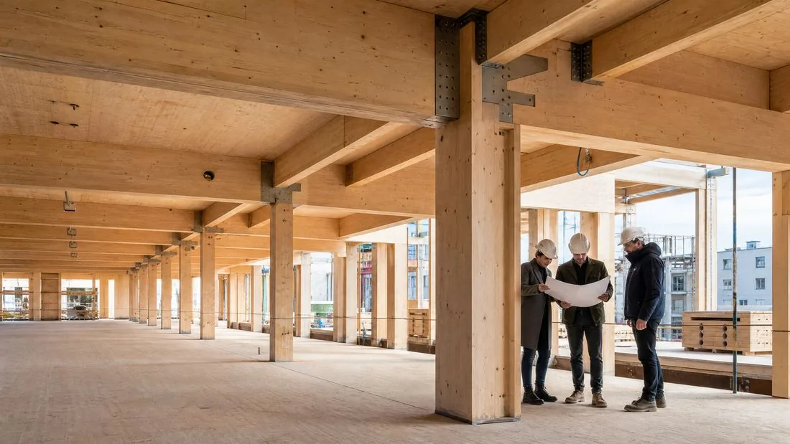
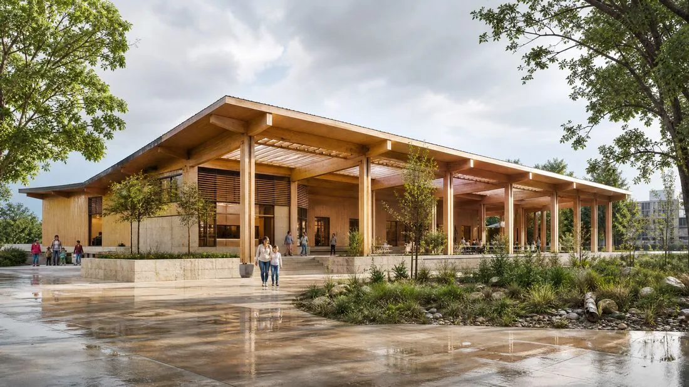

บทความ
สถาปัตยกรรมไม้เทคโนโลยีขั้นสูง (Mass Timber)

อุตสาหกรรมก่อสร้าง ซึ่งรับผิดชอบส่วนสำคัญของการปล่อยก๊าซเรือนกระจกโลก กำลังเข้าสู่การปฏิวัติเชิงโครงสร้างอย่างแท้จริง Mass Timber หรือไม้เทคโนโลยีขั้นสูง กำลังกลายเป็นทางเลือกที่น่าเชื่อถือและสวยงามที่สุดแทนเหล็กและคอนกรีตสำหรับอาคารสูง ด้วยนวัตกรรมด้านไม้ลามิเนตไขว้ (CLT) และไม้ลามิเนตกาว (Glulam) ตึกระฟ้าไม้จึงไม่ใช่เรื่องเพ้อฝันอีกต่อไป
CLT และ Glulam: เหล็กกล้าแห่งศตวรรษที่ 21
Mass Timber อาศัยการประกบชั้นไม้ที่ติดกาวเข้าด้วยกันเป็นแผงและคานที่มีความแข็งแรงเชิงโครงสร้างเทียบเท่าเหล็ก แต่เบากว่ามาก วัสดุเหล่านี้ทำให้ก่อสร้างอาคารสูงกว่า 25 ชั้นได้แล้ว

การลดคาร์บอนด้วยการกักเก็บ: แหล่งกักเก็บคาร์บอนในเมือง
จุดเด่นของไม้เทคโนโลยีขั้นสูงคือความสามารถในการกักเก็บคาร์บอน ต้นไม้กักเก็บคาร์บอนไว้ในขณะเติบโต การใช้ไม้จากป่าที่จัดการอย่างยั่งยืน ช่วยให้โครงสร้างแต่ละแห่งลดศักยภาพโลกร้อนจากการก่อสร้างได้อย่างมีนัยสำคัญ

ความท้าทายทางเทคนิคและความทนทานต่อแผ่นดินไหว
งานวิจัยบนโต๊ะสั่นสะเทือนขนาดใหญ่พิสูจน์ความทนทานที่โดดเด่นของอาคารไม้ต่อแผ่นดินไหว ความยืดหยุ่นตามธรรมชาติของไม้ ร่วมกับระบบการเชื่อมต่อที่ทันสมัย ช่วยให้โครงสร้างสลายพลังงานแผ่นดินไหวได้ดีกว่าโครงสร้างคอนกรีตแข็ง
บทสรุป
สถาปัตยกรรม Mass Timber เป็นการกลับมาของไม้ในฐานะวัสดุชั้นดีและทันสมัย ผสมผสานประสิทธิภาพทางอุตสาหกรรมเข้ากับความอ่อนไหวด้านนิเวศ อาคารเสียดฟ้าไม้ไม่ได้เป็นเพียงความสำเร็จด้านวิศวกรรม แต่เป็นสัญลักษณ์ของอารยธรรมที่กำลังเรียนรู้ที่จะก่อสร้างร่วมกับธรรมชาติแทนที่จะเอาชนะมัน